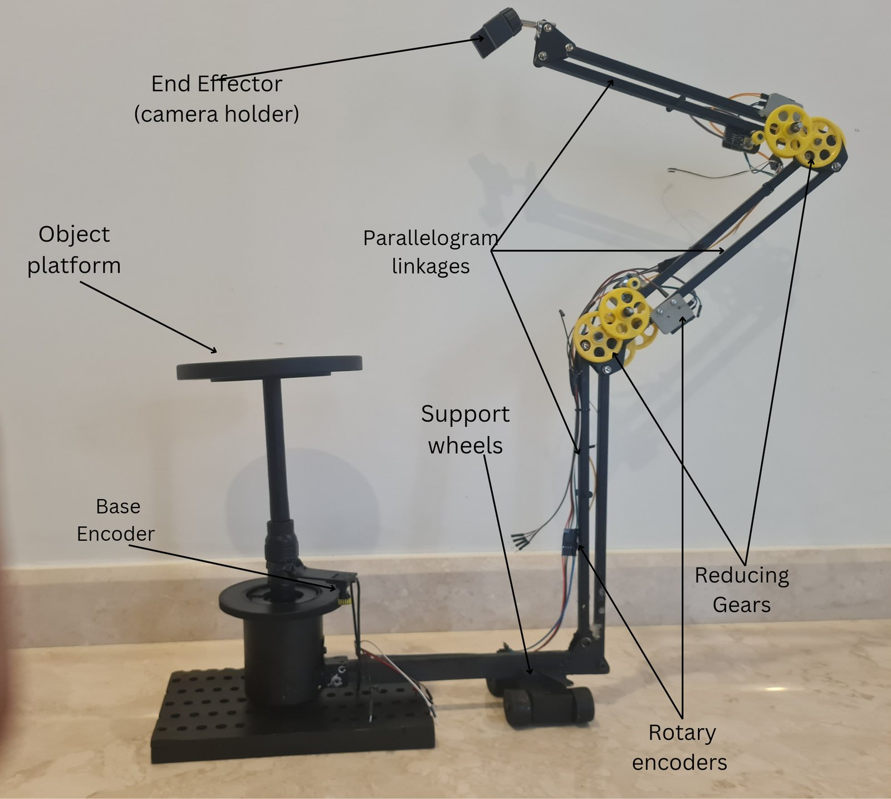
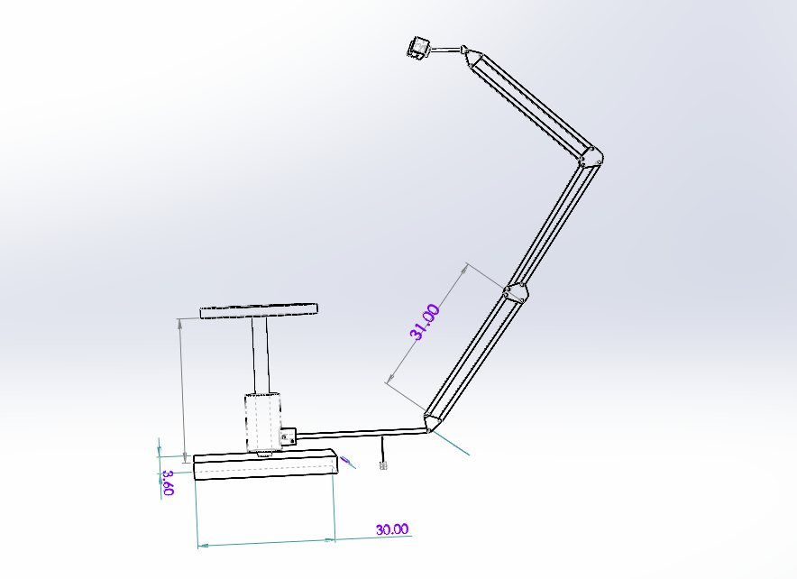
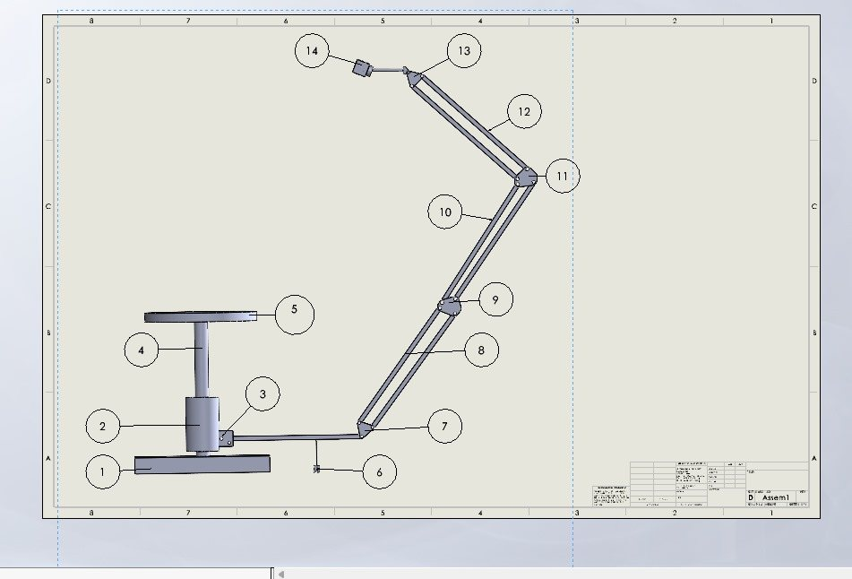
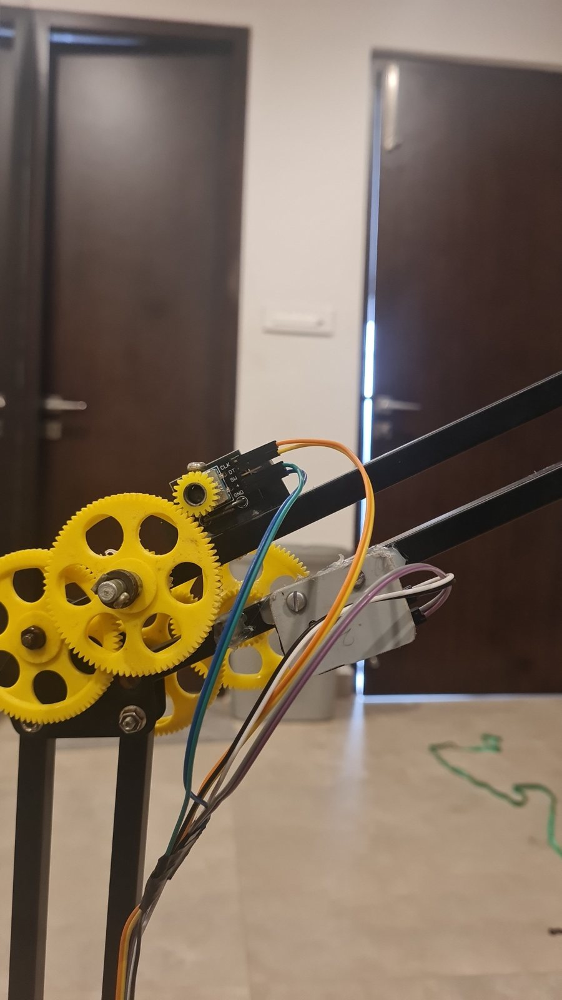
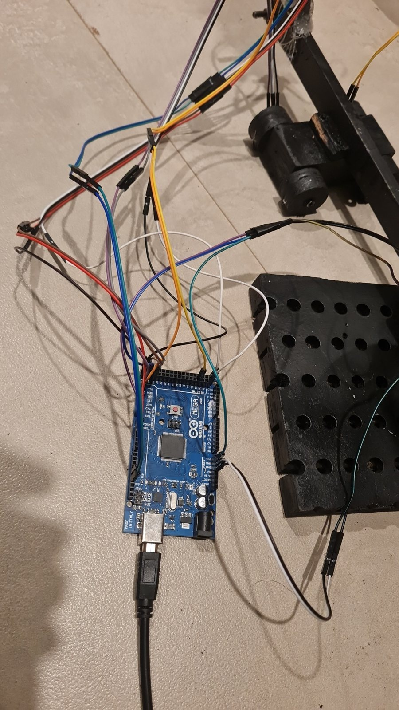
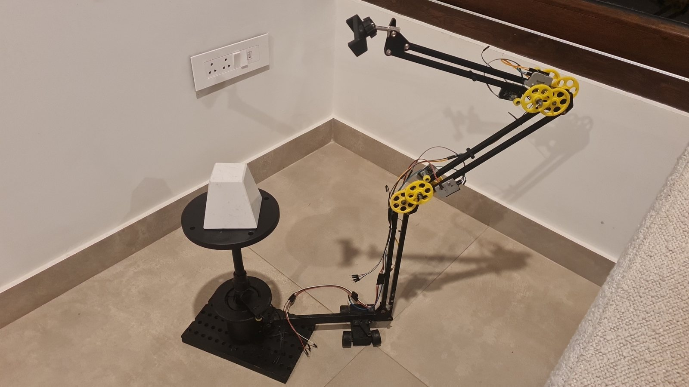
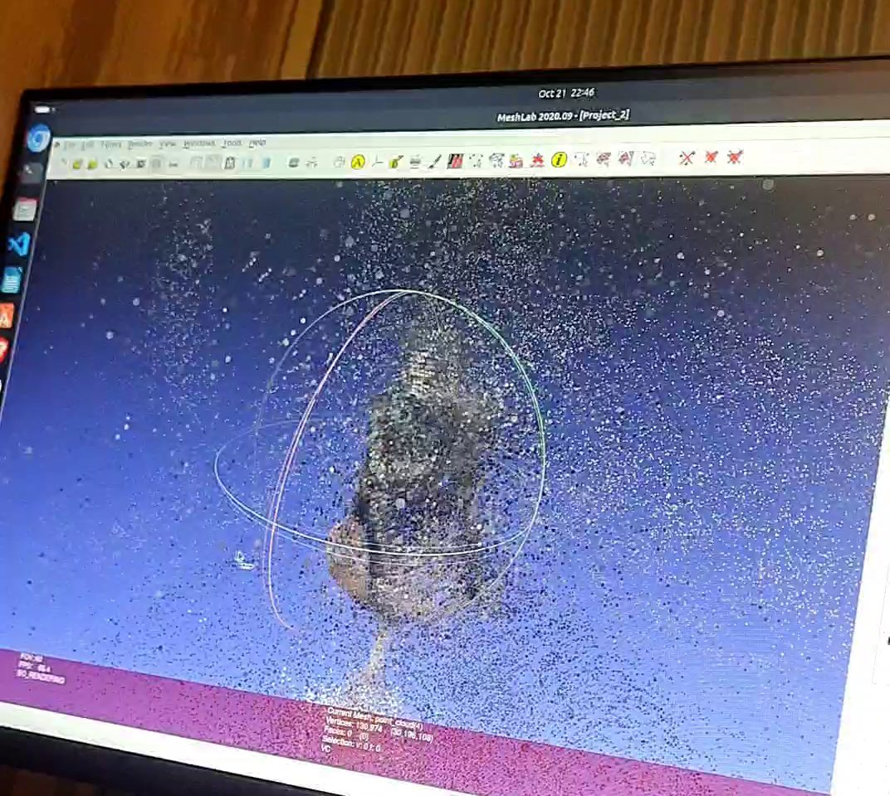
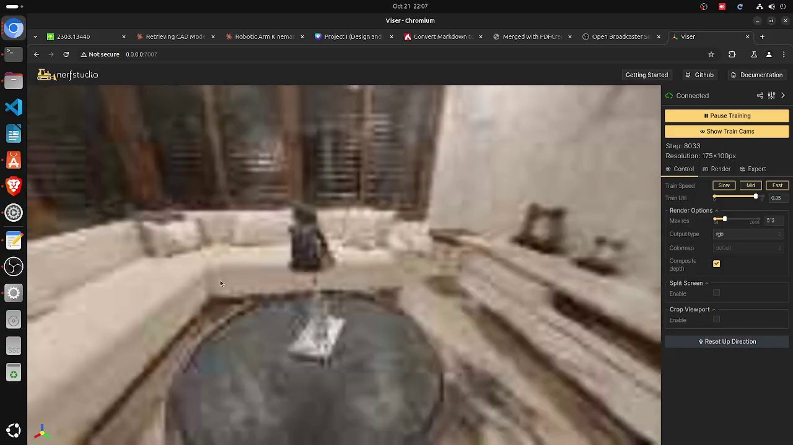

Why it matters
Capturing the shape of a real object is the first step in taking a physical part back to CAD. Scanners that automate it often need costly hardware. Methods that work from photos have to work out where the camera was for every picture, which was the slowest step in our pipeline, and an uneven handheld capture loses many of its photos.
The idea
The fix is mechanical and simple. The camera rides on linked arms whose joint angles are read by seven encoders, so its position is known for every photo. The rig is built from printed gears, rotary encoders and an Arduino, and a two-minute capture registered 252% more images than handheld.
1The problem
Neural reconstruction methods such as Instant-NGP turn a set of photos into a 3D scene. They need the camera's pose for every photo. The usual way to get poses is structure from motion, which matches features across images, and in our pipeline it was the slowest step.
It also fails quietly. When a handheld capture is uneven, structure from motion registers only some of the images, and the rest are thrown away.
2What we built
The apparatus is a multi-arm linkage with four degrees of freedom. The object, about 30 cm in size, sits on a platform at the centre. Three linkages of 32 cm, built as parallelograms, carry the camera holder around it.
Seven rotary encoders measure the joint angles through printed reduction gears, and an Arduino Mega 2560 reads them. Forward kinematics with Denavit–Hartenberg (DH) parameters, the standard way to describe a chain of joints, turns those angles into a camera pose. The design intent is that these poses go to Instant-NGP as known camera extrinsics.


| Dimension | Value |
|---|---|
| Maximum radius | 136 cm |
| Link length | 32 cm, three linkages |
| Base offset | 40 cm |
| Minimum viewing distance | 40 cm |
| Base height | 31.5 cm |
| Viewing angles | 30° to 60° |










3Results
| Two-minute capture | Handheld | With the rig |
|---|---|---|
| Trial 1 | 52 | 230 |
| Trial 2 | 57 | 252 |
| Trial 3 | 66 | 279 |
| Trial 4 | 120 | 277 |
| Average | 73.75 | 259.5 |
We also compared reconstruction methods on processing time, using the figures in the table below. In our own test, Instant-NGP gave a first render within 1.5 minutes and finished training in 7 minutes. About 100,000 points per scene gave the best point clouds: more points added noise, and fewer lost detail.
| Method | Processing time |
|---|---|
| COLMAP (photogrammetry) | Hours to days |
| NeRF (original) | 20 to 48 hours |
| Gaussian splatting | 21 to 36 minutes |
| Instant-NGP | 5 to 8 minutes |




4The limit it exposed
By the report in November 2024 the gain had been measured through COLMAP: steadier, better-spaced images register more often. Passing encoder poses to Instant-NGP directly, which removes structure from motion altogether, was the planned next step.
The rig taught me that capture hardware decides what a vision model can do. The next project in this thread, the ABI inspection prototype, started from the lighting and the fixture for the same reason.